Ориентирование в Европе
Континент, где придумали ориентирование
Почти всё, что сегодня называют спортивным ориентированием, родилось в Европе: учения шведских и норвежских гарнизонов конца XIX века, первые национальные федерации, ночные эстафеты на сотни команд, недельные «фестивали» на двадцать тысяч участников, первая международная федерация и первый официальный чемпионат — чемпионат Европы 1962 года в норвежском Лётене. Как вид спорта появился и что такое его дисциплины, рассказывает статья об истории ориентирования в мире; здесь — о том, как он расходился по континенту: из Скандинавии в Центральную Европу, на Британские острова и юг, в Прибалтику и дальше на восток, — какие национальные школы из этого выросли и какие европейские старты сделали ориентирование массовым.
Опорой служат статьи Википедии на языках тех стран, о которых идёт речь (шведской, финской, норвежской, датской, чешской, немецкой, венгерской, польской, французской, итальянской, эстонской и латвийской), история испанской федерации (FEDO), доклад Я. Лангра об истории чешских карт, новости Международной федерации ориентирования (IOF), статистика O-Ringen и Юколы, а также календарь чемпионатов IOF и другие статьи O-Maps. Все упомянутые люди собраны в указателе имён в конце статьи.
- Колыбель
- Швеция и Норвегия: 1893 — первые соревнования офицеров в Стокгольме, 1897 — первый гражданский старт под Осло
- Первые федерации
- Швеция — 1938, Финляндия и Норвегия — 1945, Дания — 1950
- IOF
- 21 мая 1961, Копенгаген: десять стран-основателей, все европейские
- Чемпионаты Европы
- в беге — 1962, 1964 и с 2000; на лыжах — с 2001; на велосипедах — с 2006; юношеские (EYOC) — с 2002
- Массовые старты
- Тиомила (с 1945), Юкола (с 1949), O-Ringen (с 1965; рекорд — 25 021 участник в 1985)
- Медали ЧЕ в беге
- больше всех золотых — у Швейцарии (41), больше всех медалей — у Швеции (93), 1962–2026
- Главные районы
- Скандинавия и Финляндия, Альпы, Чехия, Прибалтика, Шотландия, Португалия
- Архив O-Maps
- 136 чемпионатов мира и Европы IOF в беге, на лыжах и на велосипедах, прошедших в 24 европейских странах в 1962–2026 годах (на 14 ноября 2026 года; все числа O-Maps — на эту дату)
Места на карте
Где проходили соревнования, о которых рассказывает статья. Точка стоит там же, где событие на карте календаря O-Maps — в его координатах или в центре его карты, поэтому у многодневных стартов точек несколько. Цвет точки показывает, когда место впервые появляется в статье, число в кружке — сколько рядом точек. Значок 📍 в тексте ведёт к месту на этой карте.
Все места списком
1893–1950-е: Швеция, Норвегия, Финляндия и Дания
Военные корни вида спорта общие для всей Скандинавии: по хронике шведской Википедии, 28 мая 1893 года соревнования прошли на ежегодных играх стокгольмского гарнизона, 31 октября 1897 года клуб IK Tjalve провёл первый гражданский старт в Нордмарке под Осло, а 17 марта 1901 года первые гражданские соревнования в Швеции устроил Sundbybergs IK (исторические вехи Шведской федерации ориентирования; подробнее об этих истоках — в статье о мировой истории ориентирования). Массовым спортом ориентирование сделал шведский майор и деятель скаутского движения Эрнст Килландер: в 1919 году он устроил в Наке под Стокгольмом соревнования на 12 км, собравшие 220 участников (по немецкой Википедии — 155 или 220). Дальше всё шло быстро: в 1925 году к стартам впервые допустили женщин, в 1928-м появился первый клуб ориентирования (SK Gothia), а в 1932-м прошла первая международная встреча — Норвегия против Швеции (по немецкой Википедии). К 1934 году, по английской Википедии, в Швеции ориентированием занималась уже четверть миллиона человек.
Национальные федерации Севера появились одна за другой. Первый чемпионат Швеции, по шведской Википедии, прошёл 27 сентября 1935 года в Скиннскаттеберге (немецкая Википедия называет 1937 год — год первых чемпионатов Швеции и Норвегии), а 6 января 1938 года в Стокгольме был основан Шведский союз ориентирования (Svenska Orienteringsförbundet, SOFT; в английской Википедии — 1936 год); Килландер с первого дня входил в его правление. По немецкой Википедии, ориентирование в Швеции щедро поддерживало государство, и вскоре оно стало обязательным предметом в школах. В Финляндии первые соревнования провёл клуб IFK Helsingfors в Гранкулле в 1923 году, первый чемпионат прошёл в Вихти в 1935-м, а Финский союз ориентирования был основан в марте 1945 года (18 марта — по финской Википедии и шведской статье о самом союзе; общая шведская статья «Orientering» называет 24-е, а 18 марта относит к шведоязычному союзу Финляндии). Норвежский союз основан 1 октября 1945 года. Датские ориентировщики до 1950 года состояли в общем союзе с лыжниками; Датский союз ориентирования выделился 3 декабря 1950 года, и его первый председатель Олаф Андерсен в 1960-м стал инициатором создания международной федерации.
Северные страны рано начали действовать сообща. В 1946 году был создан Северный совет ориентирования (Nordisk Orienteringsråd, NORD), согласовывавший календарь и правила, в 1949-м шведы собрали в Сандвикене международную конференцию одиннадцати стран, а с 1955 года раз в два года проводился чемпионат Северных стран: первый принял Кольморден, последний прошёл в 2009 году (с 1999-го он был открыт и для спортсменов других стран, а в 2010–2013 годах его место занял Nordic Orienteering Tour в программе Кубка мира). Здесь же родилась специальная карта: по докладу Я. Лангра, первую карту, нарисованную именно для ориентирования, сделали в 1941 году для района Furuholmen под Осло, а первую цветную — в 1950-м для Оппсала (немецкая Википедия датирует первую «чисто ориентировочную» карту 1948 годом). Шведская Википедия объясняет популярность ориентирования на Севере и в Швейцарии ещё и правом свободного доступа в лес (allemansrätten) - возможности бегать по чужому лесу без разрешения владельца.
С 1945 года: Тиомила, Юкола и Венла

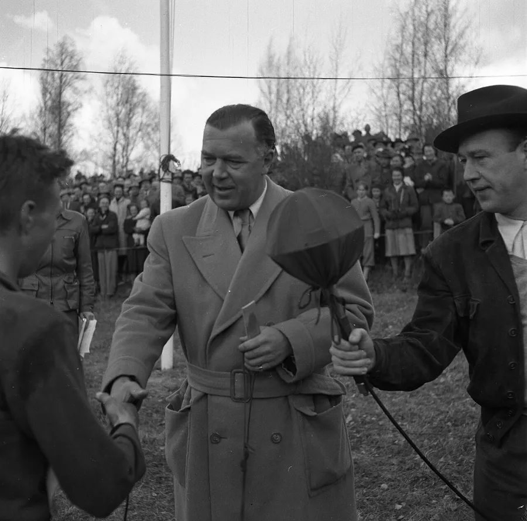
Первой многоэтапной эстафетой в ориентировании стала шведская Тиомила («десять миль»: шведская миля — 10 км). Её придумал Альвар Чельстрём, один из трёх братьев-основателей компании Silva, при участии газеты Stockholms-Tidningen. Первая Тиомила прошла 28–29 апреля 1945 года: эстафету несли от древних курганов Уппсалы до стадиона в Энебюберге, команды пробежали 107 км, а победил клуб SoIK Hellas с результатом 15 ч 51 мин 59 с. С 1970 года у эстафеты единый соревновательный центр, с 1977-го — женская эстафета (в первый год — 299 команд), с 1992-го — юношеская. Главный этап мужской Тиомилы — «Долгая ночь», четвёртый, около 17 км по ночному лесу в 2017 году. Тиомилу отменяли дважды: в 1962 году из-за эпидемии желтухи и в 2020-м из-за пандемии; в 2019 году на старт вышли 310 мужских и 336 женских команд (по английской Википедии).
По примеру Тиомилы финские ориентировщики задумали свою большую эстафету. Организаторами стали члены общества Kaukametsäläiset, созданного 30 июня 1948 года, а партнёром — газета Helsingin Sanomat. Первая Юкола прошла 12–13 июня 1949 года под Хельсинки: стартовала 41 команда, финишировали 15. Название взято из романа Алексиса Киви «Семеро братьев» (братья Юкола). В эстафете семь этапов, старт даётся в субботу в 23 часа, между 13 и 19 июня, и первые этапы бегут с фонарями. Женщины с 1951 года соревновались в личной гонке «Venlojen juoksu», в 1978-м она стала трёхэтапной эстафетой Венла, а с 1981-го — четырёхэтапной. Больше всех Юкол выиграл клуб Helsingin Suunnistajat (восемь), по семь побед на счету Эркки Аро и Юхани Салменкюля, а в «марафонском» зачёте за все годы первым идёт норвежский Halden SK. Из клубов не с Севера в первую тридцатку раньше всех пробились чехословаки: SK Slavia — 24-е место в 1975 году, CSTV — восьмое в 1980-м (финская Википедия). В календаре O-Maps есть и Юкола 2011 года📍 — с протоколом на петербургском O-Site.

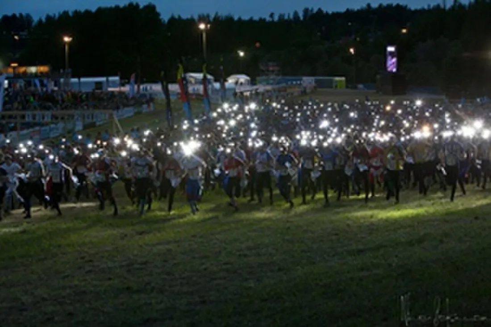
Обе эстафеты стали лабораторией новых технологий. По шведской Википедии, на Тиомиле в 1992 году впервые вели электронный учёт результатов в реальном времени, в 1995-м впервые в эстафете ориентировщиков применили электронную отметку, в 2005-м — GPS-слежение за лидерами, а в 2006 году мужскую гонку впервые показали в прямом телеэфире. Вокруг двух великих эстафет выросли и другие: стокгольмская осенняя 25-manna, где в команде 25 человек обоего пола и всех возрастов, и эстонская ночная Jüriöö jooks (с 1960 года; в команде трое мужчин и две женщины). Сегодня Юкола — одно из самых массовых событий любительского спорта в Финляндии: по финской Википедии, вместе с Венлой в ней участвуют более 16 тысяч человек.
Смотреть
1920–1960-е: Центральная Европа и рождение IOF
За пределы Севера ориентирование вышло ещё до Второй мировой войны. В Венгрии первые соревнования в 1925 году провёл художник из Боя Хенрик Рипсам, который, по венгерской Википедии, «заразился» ориентированием, возвращаясь из русского плена через Скандинавию. В Швейцарии, по немецкой Википедии, первые старты прошли в 1930-е годы, а настоящий подъём пришёлся на годы войны, когда ориентирование стало частью допризывной военной подготовки. В Германии вид спорта поддерживали и нацисты, и эта военизированная репутация, по той же статье, долго тормозила его развитие после войны: чемпионаты Германии (ФРГ) проводятся только с 1963 года.
В Чехословакию ориентирование привезли туристы, побывавшие в Скандинавии, но поначалу сделали по-своему: состязались патрули с грузом, на КП сдавали устные экзамены, а бегать было запрещено (чешская Википедия). Первые соревнования провели туристы Злина 22 октября 1950 года на горе Бунч в Хржибах — для патрулей из трёх человек, по карте масштаба 1:75 000 с мужской дистанцией 13,4 км (доклад Я. Лангра). В 1952 году прошли первый чемпионат ЧСР, первый ночной старт и первые лыжные соревнования, с 1960-го стали соревноваться индивидуально, по-скандинавски, а в 1968-м ориентировщики вышли из союзов туристов и лыжников и создали свой союз — предшественника нынешнего Чешского союза ориентационных видов спорта (ČSOS, так он называется с 2010 года). В ГДР ориентирование развивал Союз туристов и альпинистов, который в 1970 году внёс ориентирование в своё название (DWBO); в том же году он принимал третий чемпионат мира в Айзенахе и Фридрихроде📍 — первый в Центральной Европе. После объединения Германии восточногерманский союз ориентирования просуществовал меньше года; сегодня ориентированием в Германии руководит рабочая группа «Orientierungssport» Немецкого гимнастического союза (DTB) и Немецкого союза ориентирования (DOSV). Австрийская федерация (ÖFOL) основана в 1966 году, Польша вступила в IOF в 1967-м на конгрессе в Инсбруке и в 1970 году дебютировала на чемпионате мира в ГДР, но собственный союз (PZBnO, с 2006 года — PZOS) поляки создали лишь в 1989-м в Гдыне.
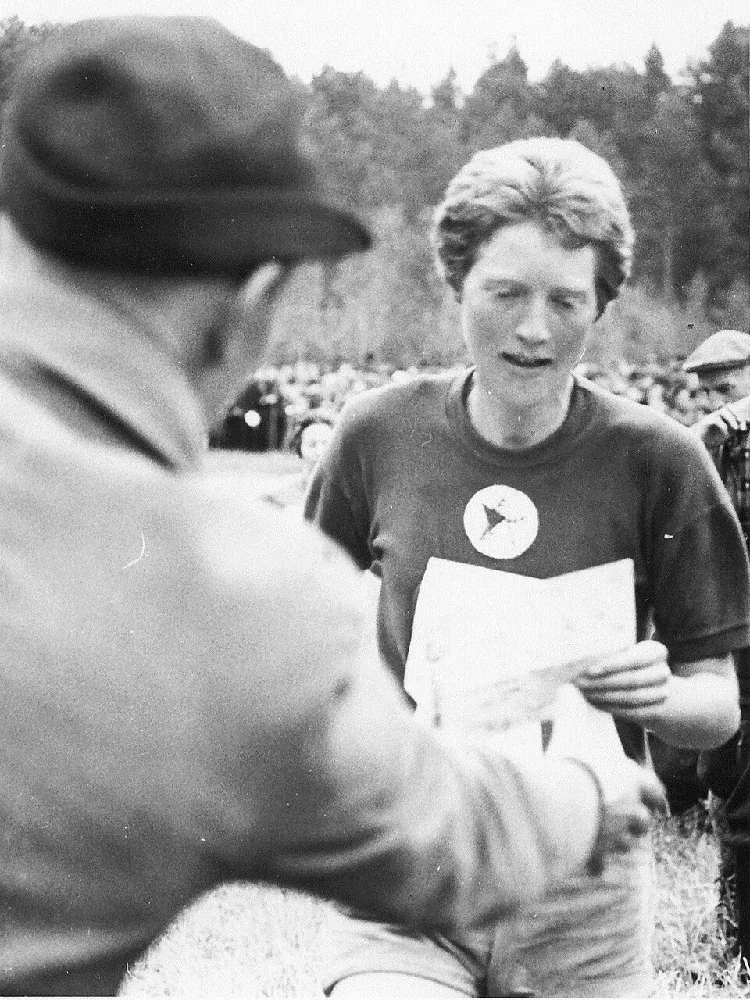

Северу и социалистическим странам предстояло договориться. По русской Википедии, в 1958 году в Будапеште прошёл съезд представителей соцстран, чьи правила ещё отличались от скандинавских; в 1959-м, по немецкой Википедии, на конференции NORD в Швеции к северянам присоединились Австрия, Болгария, Чехословакия, обе Германии, Югославия, Швейцария и Венгрия, а в 1960-м на открытые международные соревнования под Стокгольмом приехали семь стран. 21 мая 1961 года в Копенгагене была основана Международная федерация ориентирования (IOF); в неё вошли Болгария, Чехословакия, Дания, ГДР, ФРГ, Финляндия, Венгрия, Норвегия, Швеция и Швейцария, а в первый совет, по чешской Википедии, был избран чехословак Мирослав Главачек. Уже в 1962 году IOF провела первый чемпионат Европы в норвежском Лётене📍: победили норвежец Магне Люстад и шведка Улла Линдквист, эстафета была неофициальной. В 1964-м в швейцарском Ле-Брассю📍 выиграли финн Эркки Кохвакка и швейцарка Маргрит Томмен, а эстафета стала официальной. На конференции IOF 1965 года в Болгарии приняли общие международные правила и решили вместо чемпионатов Европы проводить чемпионаты мира (польская Википедия), и первый из них прошёл в 1966 году в Финляндии. Подробнее о первых чемпионатах — в статьях о чемпионатах Европы и мира.
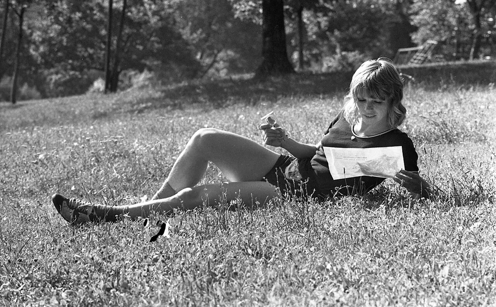

Первой сломала монополию Севера Венгрия: Шаролта Монспарт стала первой чемпионкой мира не из скандинавских стран, выиграв чемпионат мира 1972 года в чехословацких Старе-Сплави📍; на том же чемпионате, по докладу Я. Лангра, проходимость леса впервые показали на карте зелёным цветом. Монспарт четырнадцать раз выигрывала чемпионат Венгрии, а позже первой из европейских женщин пробежала марафон быстрее трёх часов (английская Википедия). Венгерским картографам помог договор 1970 года между федерацией (MTFSZ) и Министерством обороны, который обеспечил их топографической основой, а следующее поколение дало ещё одну чемпионку мира — Каталин Олах (1991 и 1995).
С 1965 года: O-Ringen и многодневки
Самое массовое соревнование ориентировщиков придумали два шведа — Пео Бенгтссон и Сивар Нордстрём, бронзовый призёр первого чемпионата Европы. Образцом послужили велосипедные «шестидневки», и в 1965 году в Дании, Сконе и Блекинге прошли первые «5-дневки» со 156 участниками. Название O-Ringen взято у «профсоюза» шведских сборников, созданного в 1962 году по образцу лыжного «Skidringen». Рост был стремительным: 1 910 участников в Мутале в 1967 году, больше 10 тысяч в Реттвике в 1973-м и рекорд, который держится до сих пор, — 25 021 участник в Фалуне в 1985 году. Каждый год O-Ringen переезжает в новый район Швеции; до 2014 года его проводили клубы, а в 2013-м шведская федерация создала для этого компанию O-Ringen AB, которая целиком ей принадлежит. Элитные классы O-Ringen трижды входили в Кубок мира (1998, 2007, 2008), снова получили этот статус в 2018 году, а среди победителей — Улла Линдквист (восемь раз подряд, 1967–1974), Шаролта Монспарт (1976) и Йёрген Мартенссон (1981, 1996, 1997).

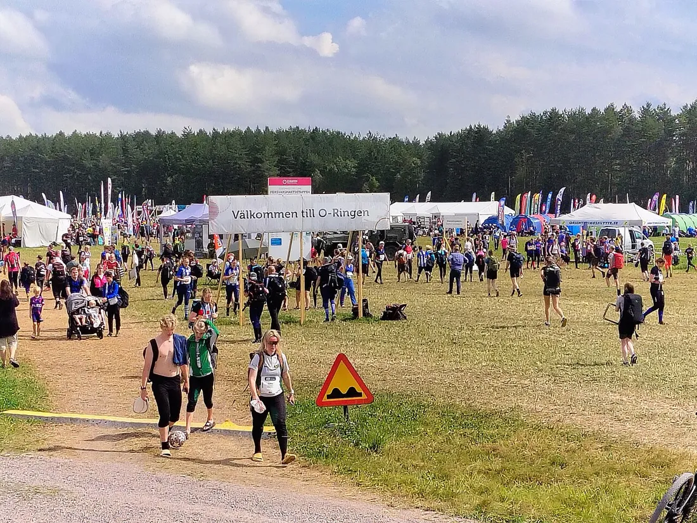
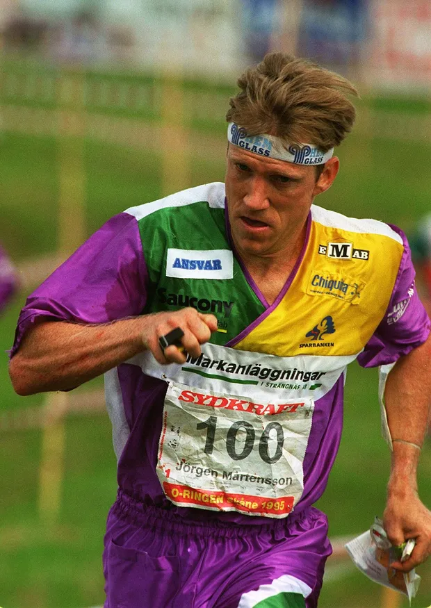

По образцу O-Ringen многодневки появились по всей Европе. Британский Scottish 6 Days проводится раз в два года с 1977 года и собирает около 3 000 участников. Swiss O-Week уводит участников в горные курорты — Церматт, Флимс, Санкт-Мориц, — и в 2014 и 2023 годах собирала по 4 600 человек (немецкая Википедия). Первая Swiss O Week прошла в Бруннене в 1996 году и собрала 3 000 участников из 30 стран; при этом швейцарская традиция многодневок старше — первый Swiss 5-Day состоялся ещё в 1969-м. Чешская пятидневка в Йичине в 1984 году собрала почти 3 500 участников, а её первый день совместили с неофициальным этапом Кубка мира среди скал Чешского рая (архив Кубка мира ČSOS). В Финляндии в июле проходят сразу две недели — Kainuun rastiviikko (около 4 000 участников) и Fin5, в Латвии с 1987 года — трёхдневка клуба «Kāpa» (больше 1 500 участников; рекорд одного этапа — 2 484 в Яунциемсе 22 апреля 1987 года), а эстонский клуб OK Ilves в 1979–2011 годах проводил многодневную эстафету Ilvesteade, на которую в 1986–1989 годах приезжали больше 3 000 человек. В Литве с 1990 года проводится многодневка Takas: в 2016-м состоялся её 27-й выпуск, собравший около 1 000 участников. Первая советская многодневка тоже была «европейской»: в пятидневке 1968 года под Каннельярви📍 участвовали команды Эстонии, Латвии и Литвы (подробнее — в статье о Ленинграде и Петербурге).
1957–1990-е: Британия, Франция и юг Европы
В Британию ориентирование принесли олимпийцы. Одним из первых его пропагандистов был Крис Брашер — чемпион Олимпийских игр 1956 года в беге на 3000 м с препятствиями и впоследствии один из основателей Лондонского марафона; по английской Википедии, в 1957 году он первым рассказал о новом спорте в газете The Observer. Вместе с ним ориентирование продвигал другой бегун-олимпиец, Джон Дисли. Помогали и шведы: в 1962 году в Шотландию приехал барон Рак Лагерфельт из стокгольмского клуба, и в мае того же года в Данкелде прошёл первый чемпионат, а затем — Ян Чельстрём, сын одного из основателей Silva, который помогал британцам с картами и тренировками. В январе 1967 года он погиб в автокатастрофе в Швеции, и в его память в том же году провели первый фестиваль JK (Jan Kjellström International Festival of Orienteering); с 1969 года JK проходит на Пасху и собирает больше 4 000 участников. В июне 1967 года английская и шотландская ассоциации объединились в Британскую федерацию ориентирования, к 1998 году в ней было около 10 тысяч членов. Британия четыре раза принимала чемпионат мира: в Авиморе в 1976 году📍, в Инвернессе в 1999 и 2015 годах и в Эдинбурге в 2024-м📍.
Во Франции, по французской Википедии, первые попытки привить шведский спорт через скаутов, туристов и гимнастов-эбертистов ещё до 1960 года не удались, и вид спорта пришёл во Францию уже в версии, кодифицированной IOF; за шведской пропагандой стояли и экономические мотивы — рынок компасов Silva. Французская федерация ориентирования (FFCO) основана 25 апреля 1970 года; её долгие годы раздирали споры военных и гражданских, а армия, где ориентирование стало модной формой топографической подготовки, сыграла в его распространении большую роль (история вида спорта во Франции стала темой диссертации М. Ласко). Франция принимала чемпионаты мира в Жерармере в 1987 году📍 — это был первый чемпионат мира для сборной СССР — и в Савойе в 2011-м📍, где Тьерри Жоржу выиграл миддл, длинную дистанцию и эстафету.
В Италии, по итальянской Википедии, ориентированием в 1950-е годы занимались военные, разыгрывавшие у озёр Монтиколо под Больцано «Трофей Буффа»; первое настоящее соревнование провёл Серджо Грифони 6 декабря 1967 года в Лацио, а в Трентино вид спорта прижился стараниями Владимира Пацла: созданный там в 1975 году комитет ориентирования позже стал общеитальянским. Первые громкие итальянские победы пришли на лыжах: Николо Коррадини четыре раза становился чемпионом мира в 1994–2000 годах. Испанские военные пробовали ориентирование с 1960 года, первую карту по международным нормам — мадридского парка Каса-де-Кампо — заказал в 1972-м профессор Мартин Кронлунд, ассоциированным членом IOF Испания стала в 1980-м, полноправным — в 1989-м, а в 1996 году Мурсия приняла первый чемпионат мира среди ветеранов: около 3 000 участников из 35 стран (история FEDO). Португальская ассоциация появилась в 1987 году, федерация — в 1990-м, и сегодня Португалия — одна из главных площадок Европы: чемпионат Европы 2014 года в Палмеле📍, два чемпионата мира и четыре чемпионата Европы по велоориентированию, последний — в Алмейде в 2026 году📍.
Прибалтика, Украина и Беларусь: от школы внутри СССР к своим федерациям
В Прибалтике ориентирование старше советской власти. Первым эстонским стартом считаются соревнования 19 июня 1926 года в лесу Клоостриметса в Пирита, на празднике Кайтселийта: 4,9 км, пять КП, победил студент Тартуского университета Юлиус Тийсфельдт (эстонская Википедия). В Латвии первые соревнования прошли в 1936 году, в Литве первые старты с элементами ориентирования, по литовской энциклопедии VLE, относят к 1955-му. После войны, по латвийской Википедии, Прибалтика стала главным центром ориентирования в СССР. В Эстонии в июне 1959 года появился комитет ориентирования, 27 сентября того же года у Нелиярве прошёл первый чемпионат республики, а 14 февраля 1960-го в Элве — первый лыжный; осенью 1962 года появилась самостоятельная федерация, первым председателем которой стал геолог и легкоатлет Анто Раукас. В Латвии федерация и первый чемпионат (у Рауны) появились в 1963 году, а когда в 1966-м десять ориентировщиков впервые получили звание мастера спорта СССР, шестеро из них, по латвийской Википедии, были латышами. Литовские чемпионаты проводятся с 1967 года, федерация создана в 1978-м.
Связи с соседями завязались сразу: в июне 1960 года у Орехово прошёл первый матч Эстония — Ленинград📍, в 1969-м в Тырва — уже десятый📍, а в 1972 году рядом с Кавголово — первый зимний📍. Эстонцы и латыши выигрывали и всесоюзные первенства: четыре из одиннадцати чемпионатов СССР прошли в Прибалтике — в Цесисе (1983)📍, под Тарту (1984)📍, под Вильнюсом (1989)📍 и у Плявиняса (1990)📍. В Тартуском чемпионате лично-командную гонку у Мааритсы📍 вторым закончил эстонец Лехо Халдна — через 32 года он станет президентом IOF, а в 1989-м он выиграл в составе сборной Эстонии эстафету чемпионата СССР под Вильнюсом вместе с Сикстеном Сильдом. В Прибалтике появились и первые самостоятельные клубы ориентирования: в Эстонии — тартуский OK Ilves, основанный 3 октября 1978 года по инициативе Арво Кивикаса (в 1981📍 и 1982 годах📍 он выигрывал эстафету чемпионата СССР в составе сборной Эстонии), в Латвии — «Kāpa» (1986). Первую медаль СССР на чемпионатах мира в 1989 году выиграла латышка Алида Абола, последнюю, в 1991-м, — Сикстен Сильд.
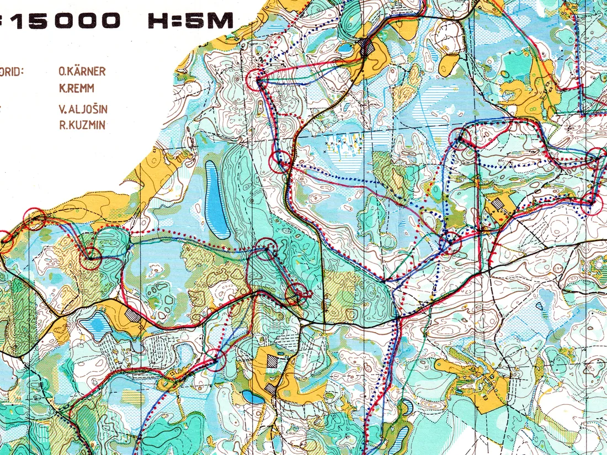
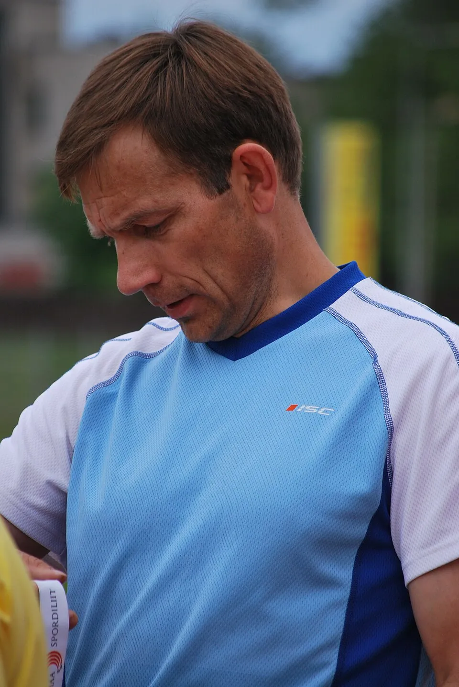

После 1991 года прибалтийские федерации вернулись в Европу как самостоятельные: латвийскую и литовскую приняли в IOF в 1991 году, эстонскую — на Генеральной ассамблее 10 июля 1992 года в Швейцарии (признание по телефонному голосованию состоялось 27 сентября 1991-го). Выросли и свои чемпионы: латыш Эдгарс Бертукс в 2012 году выиграл миддл чемпионата мира в Лозанне, на пять секунд опередив Валентина Новикова. Прибалтика стала постоянной хозяйкой больших стартов: в Эстонии прошли чемпионат Европы 2006 года в Отепя📍, чемпионат мира 2017-го в Тарту📍 и чемпионат Европы 2022-го в Раквере📍, в Латвии — чемпионат Европы 2008 года в Вентспилсе📍 и чемпионат мира 2018-го в Риге и Сигулде📍, в Литве — юниорский чемпионат мира 2006 года и чемпионат Европы 2026-го в Друскининкае📍. Открытый чемпионат Прибалтики притягивал и соседей: в календаре O-Maps есть выезды петербургской сборной в Кулдигу (2009)📍, в Селгисе (2010) и в Игналину (2017)📍. А Лехо Халдна, в 1993–2007 годах президент Эстонского союза ориентирования, в августе 2016 года был избран президентом IOF и в 2020-м переизбран.
На Украине, по украинской Википедии, первый чемпионат республики прошёл в мае 1963 года в Каневе, а осенью у Невицкого замка под Ужгородом — I Всесоюзные соревнования📍; в 1985-м Буковина принимала V чемпионат СССР📍. Независимая Украина быстро получила своего чемпиона мира — Юрий Омельченко выиграл короткую дистанцию в 1995 году, — а затем принимала возрождённый чемпионат Европы 2000 года в Трускавце📍, чемпионат мира 2007-го в Киеве📍 и лыжный чемпионат Европы 2012-го в Сумах📍. Беларусь принимала VIII чемпионат СССР под Минском в 1988 году📍 и юношеский чемпионат Европы 2019-го в Гродно; 4 марта 2022 года IOF приостановила членство белорусской федерации.
СССР и Европа: матчи, выезды и вступление в IOF
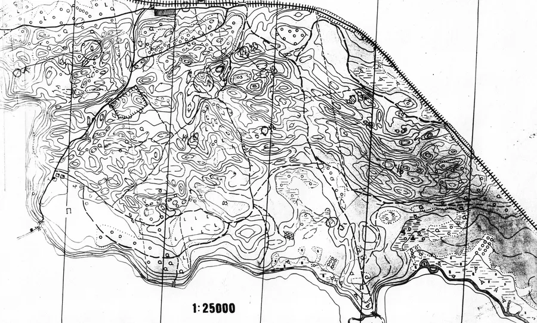
Советское ориентирование выросло из туризма почти без оглядки на Скандинавию (об этом — в статье о России и СССР), но в Европу оно вышло ещё в 1960-е годы, и первыми партнёрами стали соцстраны. В августе 1965 года в Чехословакию ездила команда Центрального совета по туризму, в 1967-м на «Кубке мира и дружбы» в Болгарии рижанка Л. Натра выиграла личную гонку, а советские женщины — эстафету (по истории ориентирования в СССР на orient.by). В сентябре 1968 года у Петяярви и Снегирёвки прошёл матч сборных СССР и Болгарии📍 — первые в СССР международные соревнования сборных по ориентированию, не считая армейских (главный судья — Никита Благово): для болгар это была, по словам «Советского спорта» (вырезка в альбоме «Ориентирование-68» из книги Благово), «последняя прикидка перед вторым первенством мира». В 1969 году советские ориентировщики выступили на международных соревнованиях в ГДР — генеральной репетиции чемпионата мира 1970 года, в 1971-м матч Болгария — СССР📍 принимал Псков, а в 1975-м армейцы СССР встретились со сборной Вооружённых сил Франции: второй день матча📍 прошёл у Юкков под Ленинградом.
На сами чемпионаты мира сборную СССР долго не пускали: в 1968–1979 годах советские спортсмены ездили туда лишь на ознакомление. Полноправным членом IOF СССР стал, по данным orient.by и учебника Дьякова и Яговкина, в 1986 году, и в 1987-м во французском Жерармере📍 сборная впервые вышла на старт чемпионата мира, а через два года Алида Абола выиграла первую медаль — в шведском Шёвде📍. Связи с Европой пережили и распад страны: в 1992 году под Петербургом в Яппиля прошёл этап Кубка мира📍, в 1995-м у Лемболово — Кубок мира среди ветеранов📍, а Россия принимала первый чемпионат Европы по лыжному ориентированию (Вологда, 2001)📍 и чемпионат Европы по велоориентированию 2011 года в Рощино📍. В медальном зачёте чемпионатов Европы в беге Россия, несмотря на отсутствие с 2022 года, остаётся пятой (8 золотых, 7 серебряных и 13 бронзовых медалей, см. диаграмму), а в лыжном ориентировании была главной силой континента: героиня лыжных чемпионатов Европы — Татьяна Власова, у неё десять личных титулов.
Чемпионаты Европы: перерыв в 36 лет и возрождение
Отдав в 1966 году первенство чемпионату мира, европейский чемпионат вернулся только в 2000 году — в украинском Трускавце📍, где Валентин Новиков выиграл и классическую, и короткую дистанции. Дальше чемпионат проводился раз в два года и входил в Кубок мира: Шюмег (2002)📍, Роскилле (2004)📍, Отепя, Вентспилс, Приморско (2010)📍, Фалун (2012)📍, Палмела, Есеник (2016)📍 и Тичино (2018)📍. Миддл, по таблицам призёров английской Википедии, разыгрывается с 2002 года (в тексте той же статьи замена им короткой дистанции отнесена к 2004-му), в 2016-м в Есенике впервые разыграли смешанную спринт-эстафету, лесной чемпионат 2020 года в Раквере отменили из-за пандемии, а с 2021-го чемпионат Европы стал ежегодным и чередует спринтерскую и лесную программы: Невшатель (2021)📍, Раквере (2022), Верона (2023)📍, Мор (2024)📍, Хасселт (2025)📍 и Друскининкай (2026). Подробности и победители — в статье «Чемпионаты Европы по ориентированию».
У двух других дисциплин IOF свои европейские первенства. Чемпионат Европы по лыжному ориентированию появился в 2001 году в Вологде📍, с 2010-го стал ежегодным, а с 2023-го проводится по нечётным годам; смешанную спринт-эстафету в его программу ввели в 2012 году. Чемпионат Европы по велоориентированию впервые прошёл в 2006 году в Варшаве📍, а с 2017 года проводится ежегодно (кроме 2020-го). Юношам 16 и 18 лет с 2002 года (первый принимала Гдыня) посвящён юношеский чемпионат Европы (EYOC), и его география — в основном Центральная и Восточная Европа: Пезинок, Шумперк, Шкофья-Лока, Копаоник, Струмица, Клуж-Напока, Гродно; в 2027 году его примет латвийская Лиепая. А накануне больших чемпионатов хозяева проводят Euromeeting — элитные старты на дистанциях чемпионата: в 2016 году в Цесисе он открыл подготовку к чемпионату мира 2018 года в Латвии, в 2023-м в Стерлинге стал генеральной репетицией эдинбургского чемпионата мира📍.
По данным O-Maps, больше всех чемпионатов приняли Финляндия (13) и Швеция (12), но за ними уже не только северяне: девять чемпионатов приняла Швейцария, по восемь — Норвегия, Чехия, Италия и Россия (почти все — лыжные), по семь — Болгария, Польша и Португалия. Польша и Португалия поднялись в этом списке почти исключительно благодаря велоориентированию: по числу чемпионатов мира и Европы по MTBO (семь и шесть) они впереди всех.
Национальные школы: кто выигрывает в Европе
Медальный зачёт чемпионатов Европы показывает, как сменились лидеры. По числу золотых медалей первая — Швейцария (41), по общему числу — Швеция (93), за ними Норвегия и Финляндия. Швейцарская школа выросла из массового «OL» с военным прошлым и свободным доступом в лес; собственный союз (SOLV) появился лишь в 1978 году, а первое золото чемпионатов мира швейцарцы выиграли в 1991-м (мужская эстафета). Зато в XXI веке Швейцария дала Симоне Нигли-Лудер — пять побед на длинной дистанции чемпионатов Европы, — Даниэля Хубманна, в 43 года выигравшего эстафету чемпионата Европы 2026 года, Маттиаса Кибурца, первого чемпиона Европы в нокаут-спринте (2021), Юдит Вюдер и Симону Эберзольд. Швеция держится на огромной клубной базе (в шведском союзе около 600 клубов) и спортивных гимназиях с ориентированием: Эмиль Вингстедт выиграл спринт на четырёх чемпионатах Европы подряд (2002–2008), Туве Александерссон — четырежды длинную дистанцию и дважды нокаут-спринт. Норвежцы в 2010–2020-е выдвинули Улава Лунданеса и Каспера Харлема Фоссера, который в 2026 году в Друскининкае выиграл длинную дистанцию и миддл; у финнов, кроме Минны Кауппи, есть Венла Харью — чемпионка Европы 2022 года на длинной дистанции.
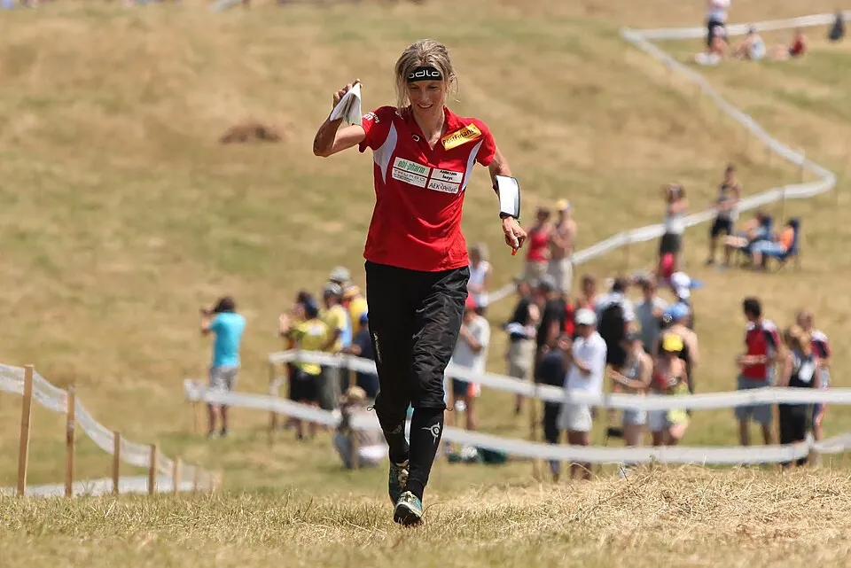

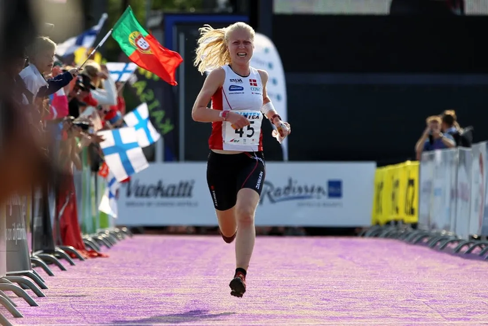

Шестая в зачёте Франция почти целиком обязана местом Тьерри Жоржу: он трижды подряд (2004–2008) выигрывал миддл чемпионата Европы, а о его 14 титулах чемпионата мира рассказывает статья о чемпионатах мира. Дания дала Майю Альм, четырёхкратную чемпионку мира в спринте (2015–2018). В Центральной Европе главное наследие — картографическое. В Чехословакии в 1968 году создали картографическую комиссию и начали учить составителей-добровольцев, с 1976 по 1991 год проводили конкурс лучших карт, а архив карт ČSOS, где каждая изданная карта хранится в трёх экземплярах (в архиве союза, в музее Злина и в Национальном архиве), к рубежу 2019–2020 годов насчитывал около 10 тысяч записей; его цифровая версия — картографический портал ČSOS (доклад Я. Лангра). Скальные районы Чехии — песчаники Докси, горы Есеника — принимали чемпионаты мира 2021 и Европы 2016 годов, а первым чемпионом мира на короткой дистанции в 1991 году стал хозяин трассы Петр Козак.
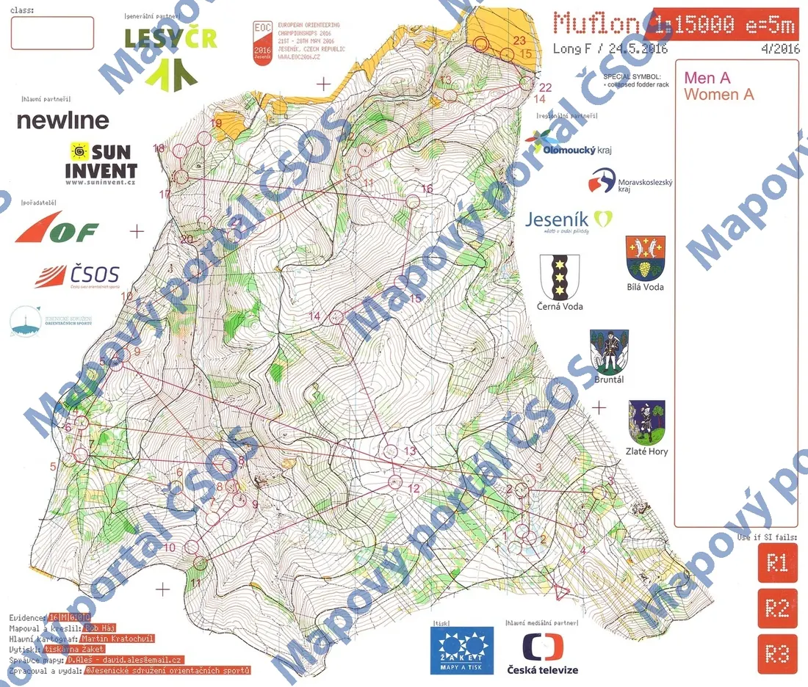
За пределами «большой пятёрки» медали чемпионатов Европы есть у Франции, Дании, Великобритании, Чехии, Украины, Латвии, Эстонии, Литвы, Словакии, Болгарии, Бельгии, Австрии и Польши. Болгария сильна на лыжах — её Станимир Беломажев выигрывал и чемпионат Европы, и чемпионат мира (миддл 2017 и 2022 годов), а у Италии есть чемпион мира по лыжному ориентированию Николо Коррадини. На велосипедах среди лидеров — датчане: в 2025 году Николине Сплитторфф выиграла все три личные гонки чемпионата Европы в Вильнюсе📍.
Европейские тренды: карты, электроника, город и телевидение
Большинство технических новшеств ориентирования тоже европейские. Картографическая комиссия IOF появилась в 1965 году; первую международную спецификацию карт — ISOM 1969 — федерация опубликовала в 1969-м: на двух страницах были описаны 45 условных знаков в четырёх цветах (чёрном, синем, коричневом и жёлтом). В 1972 году добавили зелёный цвет для обозначения проходимости растительности, а в 1975-м выпустили первую подробную брошюру с требованиями не только к знакам, но и к масштабу, сечению рельефа, точности, генерализации и печати. Затем появились редакции 1982, 1990, 2000 и 2017 годов; для лыжного ориентирования, спринта и MTBO разработали отдельные спецификации (их ранние редакции собраны в архиве картографической комиссии IOF при ELTE). Компьютерное рисование карт, по докладу Я. Лангра, появилось в мире около 1985 года, а в Чехии — в 1992-м. Важный рубеж — 14 апреля 1989 года: на соревновании в швейцарском Шнайтвальде впервые использовали карту, созданную в OCAD 1. Программу разработал швейцарец Ханс Штайнеггер; её качество, простота и доступность помогли сделать компьютерное картографирование инструментом не только профессионалов, но и клубов и отдельных составителей. Электронная отметка впервые применялась на этапе Кубка мира в 1994 году (немецкая Википедия), в эстафете — на Тиомиле 1995 года, а в Финляндии с осени 1998 года ею стали пользоваться повсеместно; главные системы — Emit и SportIdent (финская Википедия).
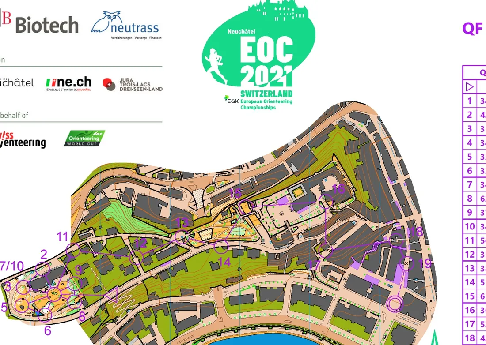
Главный тренд последних тридцати лет — переход из леса в город. Неофициальная серия Park World Tour (немецкая Википедия называет 1995 год, польская — 1996-й) приучила зрителей к ориентированию в парках, в 2001 году спринт вошёл в программу чемпионата мира в Тампере, в 2014-м — смешанная спринт-эстафета чемпионата мира в Италии, а в 2021 году в Невшателе дебютировал нокаут-спринт: квалификация, четвертьфиналы, полуфиналы и финал за один день. С 2021 года спринтерские чемпионаты Европы проходят в городах — Невшателе, Вероне, бельгийском Хасселте. Первую прямую трансляцию ориентирования показало шведское телевидение с чемпионата мира 1968 года в Линчёпинге (подробнее — в статье о чемпионатах мира), а GPS-слежение, большой экран на арене и прямой эфир эстафеты в 2000-е годы первыми опробовали O-Ringen и Тиомила.
2020-е: пандемия, отстранение и ежегодный ритм
Пандемия 2020 года остановила почти весь европейский календарь: отменили чемпионат Европы в Раквере, O-Ringen (два года подряд), Юколу и Тиомилу — её впервые с 1962 года. Юколу 2020 года в Рованиеми перенесли на август 2021-го, и она собрала лишь 1 252 мужские команды против 1 950 в 2019 году (по английской Википедии; по финской — 952). Спринтерский чемпионат Европы 2021 года в Невшателе📍 открыл новый цикл: с тех пор чемпионат Европы ежегодный, спринтерский и лесной по очереди, а его нокаут-спринт через год перешёл и в программу чемпионата мира.
28 февраля 2022 года совет IOF на внеочередном заседании приостановил членство Федерации спортивного ориентирования России, а 4 марта — белорусской федерации, на неопределённый срок: спортсменов обеих стран не допускают на старты IOF ни в одной дисциплине, в том числе в нейтральном статусе, а права на проведение соревнований отозваны. О том, как живёт с тех пор российское ориентирование, рассказывает статья о России и СССР. Часть спортсменов сменила спортивное гражданство: например, Наталья Гемперле, чемпионка Европы 2016 года в смешанной спринт-эстафете за Россию, в 2024-м выиграла эстафету чемпионата Европы уже за Швейцарию.
Европейский календарь тем временем стал плотнее, чем когда-либо. В 2026 году этапы Кубка мира прошли в Локарно📍, в Скаре и Лидчёпинге📍 и в чешском Вишши-Броде📍, а финал Кубка совместили с чемпионатом Европы в Друскининкае📍; ветеранский чемпионат мира принимали польские Жешув и Пшеворск📍, спринтерский чемпионат мира — Генуя📍. Массовые старты восстановились: на O-Ringen 2026 года в Гётеборге был 21 161 участник (шведская Википедия и сайт O-Ringen), на Юколу 2026 года в Котке вышли 1 879 мужских и 1 551 женская команда, а Тиомила с 2025 года сделала женскую эстафету шестиэтапной, и число женских команд выросло с 231 в 2023 году до 273 в 2025-м.
Вместо заключения
За сто с лишним лет Европа прошла путь от офицерских учений и скаутских забегов до спорта с ежегодными чемпионатами в трёх дисциплинах, телетрансляциями и нокаут-спринтами на городских улицах. Почти все чемпионаты мира по-прежнему проходят на этом континенте, а массовые события — Юкола, O-Ringen, Тиомила, многодневки Швейцарии, Шотландии и Чехии — собирают десятки тысяч любителей, ради которых и придумывалось ориентирование.
Карта сильнейших при этом меняется. Скандинавская монополия закончилась ещё в 1970-е, в XXI веке к Швеции, Норвегии и Финляндии прибавились Швейцария, Франция и Дания, а география чемпионатов сместилась к югу и востоку — в Португалию, Италию, Польшу, Прибалтику и Бельгию. Россия и Беларусь с 2022 года в европейских стартах IOF не участвуют, и история их отношений с европейским ориентированием пока остаётся открытой. Карты, протоколы и сплиты европейских чемпионатов собираются в календаре O-Maps — на страницах стартов EOC, SKI-EOC и EMTBOC.
Статья составлена в октябре 2026 года; актуализирована 17 ноября 2026 года. Это компиляция материалов O-Maps и других источников, перечисленных в конце страницы, при её подготовке использовался ИИ. Если вы заметили неточность или можете дополнить рассказ, напишите нам.
Источники
Статьи Википедии: шведские «Orientering», «Svenska Orienteringsförbundet», «Tiomila», «O-Ringen», «Nordiska mästerskapen i orientering»; финские «Suunnistus», «Suomen Suunnistusliitto», «Jukolan viesti»; норвежские «Orientering» и «Norges Orienteringsforbund»; датская «Dansk Orienterings-Forbund»; чешские «Orientační běh» и «Český svaz orientačních sportů»; немецкие «Orientierungslauf», «Swiss Orienteering», «Österreichischer Fachverband für Orientierungslauf», «Deutscher Verband für Wandern, Bergsteigen und Orientierungslauf», «Swiss O Week», «Ski-Orientierungslauf-Europameisterschaften»; венгерская «Tájfutás»; польская «Bieg na orientację»; французская «Course d'orientation»; итальянская «Federazione Italiana Sport Orientamento»; португальская «Federação Portuguesa de Orientação»; эстонская «Orienteerumine»; латвийская «Orientēšanās sports»; украинская «Спортивне орієнтування»; русская «Спортивное ориентирование»; английские «History of orienteering», «European Orienteering Championships» (таблицы призёров — медальный зачёт), «European Youth Orienteering Championships», «Jukola relay» (число команд), «British Orienteering Federation», «Jan Kjellström International Festival of Orienteering», «List of orienteering events», а также биографические статьи о спортсменах, указанные в указателе имён; литовская энциклопедия VLE, «Orientavimosi sportas»; история Испанской федерации ориентирования (FEDO); Я. Лангр, доклад об истории карт для ориентирования (Kartografický den, Оломоуц); ČSOS, «Orienteering World Cup events in Czechia #1 (1984)»; пресс-релиз Scottish 6 Days 2025; новости Международной федерации ориентирования (IOF): Euromeeting 2016, приостановка членства федераций Беларуси и России (2022); Scottish Orienteering об Euromeeting 2023; архив картографической комиссии IOF при ELTE: история картографии, первая ISOM 1969, коллекция спецификаций карт, коллекция образцов карт и мемориал Хансу Штайнеггеру; Д. Петрович, «Mathematical Elements of Orienteering Maps» (2022); OCAD: 25 лет программы (первая карта для соревнований создана в 1989 году); история многодневки Takas (с 1990 года; 27-й выпуск в 2016-м); официальная история Swiss O Week 1996; The Irish Orienteer, № 63 (1993) (хронология: первый Swiss 5-Day в 1969 году); фотографии — Wikimedia Commons (авторы и лицензии указаны в подписях); даты, места и результаты — календарь и архив карт O-Maps (числа о картах и событиях O-Maps в тексте и на диаграммах — по состоянию на 14 ноября 2026 года, архив и календарь продолжают пополняться); статьи O-Maps об ориентировании в мире, в России и СССР, в Ленинграде и Петербурге, о чемпионатах мира, Европы, Европы на лыжах и на велосипедах.Указатель имён
Люди, упомянутые в статье. Имя ведёт на основную страницу о человеке (полное имя, если известно, — во всплывающей подсказке), за ним — другие источники, цифры в конце — места упоминаний в тексте.
- Абола Алида · Wikipedia 1 2
- Александерссон Туве · Wikipedia 1
- Альм Майя 1 2
- Аро Эркки 1
- Беломажев Станимир 1
- Бенгтссон Пео 1
- Бертиль, герцог Халландский 1
- Бертукс Эдгарс · латвийская Википедия 1
- Благово Никита · книга «Первые азимуты…» 1
- Брашер Крис · Wikipedia 1
- Вингстедт Эмиль 1
- Власова (Наумова) Татьяна · Wikipedia 1
- Вюдер Юдит 1
- Гемперле Наталья 1
- Дисли Джон 1
- Жоржу Тьерри · Wikipedia 1 2
- Кауппи Минна 1
- Кибурц Маттиас 1
- Кивикас Арво 1
- Килландер Эрнст · Wikipedia 1
- Козак Петр 1
- Коррадини Николо 1 2
- Кохвакка Эркки 1
- Линдквист Улла · Wikipedia 1 2
- Лунданес Улав 1
- Люстад Магне 1
- Мартенссон Йёрген 1 2
- Монспарт Шаролта 1 2 3
- Нигли-Лудер Симоне 1 2
- Новиков Валентин 1 2
- Нордстрём Сивар 1
- Олах Каталин 1
- Омельченко Юрий 1
- Раукас Анто 1
- Рипсам Хенрик 1
- Салменкюля Юхани 1
- Сильд Сикстен · эстонская Википедия 1 2 3
- Томмен Маргрит 1
- Фоссер Каспер Харлем 1
- Халдна Лехо 1 2 3
- Харью Венла 1
- Хубманн Даниэль 1
- Штайнеггер Ханс 1
- Чельстрём Ян 1
- Эберзольд Симона 1
- Экерн Марит 1
Посмотреть архив: все чемпионаты IOF в календаре · чемпионаты Европы · чемпионаты мира · все карты O-Maps.